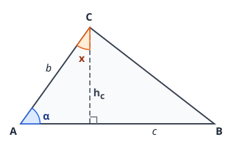

Winkel berechnen und Konstruktion prüfen
Mit einem KI-Tutor lernen
Ein KI-Tutor erklärt dir diese Seite und hilft dir bei den Aufgaben. Wähl deinen Assistenten:
Mit Claude öffnen Mit ChatGPT öffnen Mit Mistral Vibe öffnen
Du nutzt dein eigenes Konto beim Anbieter. Der Assistent ist kein Angebot von lernapps.net: lernapps liefert nur Inhalte und Aufgaben. Die Wahl gilt für alle Seiten, nur auf diesem Gerät.
Ziel: Ich kann einen fehlenden Winkel berechnen und eine Konstruktion durch Nachmessen prüfen. Im Wettbewerb heißt es oft: „Konstruiere … und miss die fehlenden Stücke.“ Mit den Schritten hast du das Dreieck – jetzt prüfst du es.
Probier zuerst
Erst rechnen, dann messen
Wie in der Aufgabe oben weißt du schon vor dem Messen, was herauskommen muss. Den dritten Winkel rechnest du mit der Winkelsumme aus:
Für die Seiten gibt es eine Faustregel: Die längste Seite liegt dem größten Winkel gegenüber, die kürzeste dem kleinsten. So prüfst du ohne Rechnung, ob deine Zeichnung passen kann.

Der größte Winkel γ und die längste Seite c liegen einander gegenüber.
Quelle: eigene Zeichnung. Lizenz: CC-BY-4.0.Nachmessen heißt: Du misst an deiner fertigen Zeichnung mit dem Geodreieck die Stücke, die nicht gegeben waren. Weicht ein Winkel um 1° bis 2° oder eine Seite um 1 mm bis 2 mm von der Rechnung ab, ist das Zeichenungenauigkeit. Bei mehr hast du dich vertan.
Ein Beispiel
Lea misst nach
Lea hat ein Dreieck mit c = 6 cm, α = 30° und β = 110° konstruiert. Erwartet:
β ist der größte Winkel, also muss b die längste Seite sein. Lea misst b = 8,8 cm und a = 4,7 cm – das passt. Für γ misst sie aber 140°. Das kann nicht sein, denn 30° + 110° + 140° sind mehr als 180°. Sie hat auf der falschen Skala des Geodreiecks abgelesen: Die zweite Skala zeigt 180° − 40° = 140°.
Messen und Rechnen müssen zusammenpassen
Merke
Im Dreieck sind es 180°, nicht 360°. Passt ein gemessener Winkel nicht zur Rechnung, prüfe zuerst die Skala: Das Geodreieck hat zwei, und sie ergeben zusammen immer 180°.
Jetzt du
Aufgabe
Drei Beispielaufgaben, jede mit ihrer Lösung:
Aufgabe Nr. 1
Gegeben sind c = 6 cm, α = 105° und γ = 30°. Für WSW brauchst du den zweiten Winkel an c. Wie groß ist β?
Tipp
Alle drei Winkel zusammen ergeben 180°.
Lösung
- Mit α = 105° und γ = 30°: β = 180° − 105° − 30°
- β ist 45° groß. Jetzt liegen α und β an c.
Richtige Antwort: 45 °
Aufgabe Nr. 2
Gegeben sind c = 6 cm, α = 30° und γ = 105°. Für WSW brauchst du den zweiten Winkel an c. Wie groß ist β?
Tipp
Alle drei Winkel zusammen ergeben 180°.
Lösung
- Mit α = 30° und γ = 105°: β = 180° − 30° − 105°
- β ist 45° groß. Jetzt liegen α und β an c.
Richtige Antwort: 45 °
Aufgabe Nr. 3
Gegeben sind c = 6 cm, α = 65° und γ = 35°. Für WSW brauchst du den zweiten Winkel an c. Wie groß ist β?
Tipp
Alle drei Winkel zusammen ergeben 180°.
Lösung
- Mit α = 65° und γ = 35°: β = 180° − 65° − 35°
- β ist 80° groß. Jetzt liegen α und β an c.
Richtige Antwort: 80 °
Aufgabe
Lösung
a
a liegt α gegenüber, dem kleinsten Winkel.
b richtige Antwort
b liegt β gegenüber, dem größten Winkel.
c
c liegt γ gegenüber, dem mittleren Winkel.
Der größte Winkel ist β = 80°, also ist b am längsten.
Aufgabe
Lösung
Richtige Antwort: Die Aussage stimmt nicht.
1° Abweichung ist Zeichenungenauigkeit, die Konstruktion passt.

Zur nächsten Aufgabe: Die Höhe teilt das Dreieck. Links entsteht das Dreieck aus A, C und dem Fußpunkt der Höhe – dem Punkt, wo sie auf c trifft.
Quelle: eigene Zeichnung. Lizenz: CC-BY-4.0.Aufgabe
Drei Beispielaufgaben, jede mit ihrer Lösung:
Aufgabe Nr. 1
Im Dreieck ist α = 65°. Die Höhe steht senkrecht auf c. Wie groß ist der Winkel x zwischen der Seite b und der Höhe?
Tipp
Im linken Teildreieck kennst du zwei Winkel. Wie groß ist der Winkel am Fußpunkt der Höhe?
Lösung
- Im linken Teildreieck: α = 65°, am Fußpunkt 90°. x = 180° − 90° − 65°
- Der Winkel x ist 25° groß.
Richtige Antwort: 25 °
Aufgabe Nr. 2
Im Dreieck ist α = 20°. Die Höhe steht senkrecht auf c. Wie groß ist der Winkel x zwischen der Seite b und der Höhe?
Tipp
Im linken Teildreieck kennst du zwei Winkel. Wie groß ist der Winkel am Fußpunkt der Höhe?
Lösung
- Im linken Teildreieck: α = 20°, am Fußpunkt 90°. x = 180° − 90° − 20°
- Der Winkel x ist 70° groß.
Richtige Antwort: 70 °
Aufgabe Nr. 3
Im Dreieck ist α = 60°. Die Höhe steht senkrecht auf c. Wie groß ist der Winkel x zwischen der Seite b und der Höhe?
Tipp
Im linken Teildreieck kennst du zwei Winkel. Wie groß ist der Winkel am Fußpunkt der Höhe?
Lösung
- Im linken Teildreieck: α = 60°, am Fußpunkt 90°. x = 180° − 90° − 60°
- Der Winkel x ist 30° groß.
Richtige Antwort: 30 °
Aufgabe
Lösung
Richtige Antwort: 80 °
γ = 180° − 70° − 50° = 60°, die Hälfte ist 30°. Im Dreieck ADC gilt: Winkel bei D = 180° − 70° − 30° = 80°.
Damit hast du das Kapitel zur Wahlaufgabe W2 geschafft: Du planst, prüfst und begründest Konstruktionen. Das war die letzte Seite dieser App: Du hast Flächen und Körper, Winkel, Symmetrie und die Wahlaufgabe W2 wiederholt. Die anderen Themen des Wettbewerbs übst du in den Apps Zuordnungen und Prozent, Brüche, Terme und Gleichungen und Wahrscheinlichkeit.
Fehler gefunden oder eine Idee für diese App?